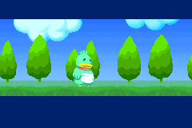
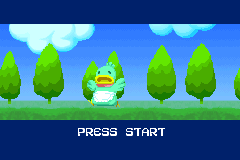

Kurukuru Kururin (Europe)
SRAM 256K Save Format Spec gbakit Built-In 📺 Joybus 💾 MultiBoot 🎮 4P Link
Cartridge Identity
- Game Code
AKRP(FamilyAKR)- Header Title
KURURIN- Maker / Revision
01/ rev0- ROM Size
- 4.0 MiB (4,194,304 B)
- Save Media
SRAM 256K- SHA-256
0d06ca78f8fd983010a48bc2123bc3417cd0912748e5bc0e08aafa7f509edbae- Engine / SDK Group
comm-011(32 families)
Screenshots


Link Cable & Multiplayer Communications
This title contains detected communication capabilities: 📺 Joybus 💾 MultiBoot 🎮 4P Link.
Detailed protocol specifications, SIO registers, Joybus commands, and MultiBoot sequences are documented in the Link & Multiplayer Reference.
- Multi-Player SIO (4P)
- 16-bit ring network · SIOCNT (
0x04000128) literals:0x003dd4,0x00c980,0x00ce4c· SIODATA32/SIOMULTI0 (0x04000120) literals:0x019cec,0x019d50,0x019dbc - GameCube Joybus
- Register literal
REG_JOY_RECV(0x04000150) at offset0x0c70a4 - Single-Cart MultiBoot
- Single-Cartridge MultiBoot (Download Play) client/server handler · Thumb SWI 0x25 (
0xDF25):0x01c5ca,0x037d88,0x068be8
Battery Save Format Specification
Open Full Save Format SpecDownload save-format.json
- Specification Coverage
- 4 mapped fields · 0 verified checksum(s) · Confidence: HIGH
- gbakit Built-In Support
- Built-in (AKRP)
gbakit save verify AKRP save.sav
gbakit save decode AKRP save.sav
gbakit save fix AKRP damaged.sav -o repaired.savObserved Battery Save Layout
- Fill Byte & Active Size
0xFFfill · 17,598–17,598 / 32,768 B active (entropy 3.10 bits/B)- Active Offset Ranges
0x0–0x15,0x18–0x44BF(2 total)- ASCII Magic / Headers
KURURIN 1.01,GUEST,Hare- Observed Variable Regions
- 0 bytes across 0 spans: None
- Candidate Checksum/Counter Spans
- None
ROM Assets, Compression & Audio
- BIOS Compression
- LZ77 (
0x10): 10 streams · RLE (0x30): 1 streams - ROM Pointer Tables
- 28 tables (0 pointing to validated compressed streams)
- SDK Backup Tags
SRAM_V111
Asset Map (formatkit.asset-map.v1)
Download AKRP-r0-0d06ca78f8fd9830.asset-map.json.gz (53,150 B (51.9 KiB)) Verified PASS · 5.81% coverage
| Metric | Bytes / Value | Entries |
|---|---|---|
| Identified | 48,432 B (47.3 KiB) (1.15%) | 497 |
| Mapped | 0 B (0.00%) | 0 |
| Opaque | 195,064 B (190.5 KiB) (4.65%) | 1 |
| Unknown | 3,950,808 B (3.77 MiB) (94.19%) | 468 |
| Total ROM Size | 4,194,304 B (4.00 MiB) | 966 |
| Coverage % | 5.81% | — |
| Entries w/ Code Refs | 513 / 966 (53.11%) | — |
Top Identified Formats: gfx.gba-palette (494 · 42,208 B (41.2 KiB)) · rom.multiboot (1 · 5,368 B (5.2 KiB)) · audio.m4a-song-table (1 · 664 B) · gba.rom-header (1 · 192 B)
Largest unknown Extents (Headerless / Custom Asset Candidates)
| Offset | Size | Shannon Entropy | Code Refs |
|---|---|---|---|
0x00331B38 | 393,448 B (384.2 KiB) | 5.528 bits/B | 0 |
0x00280C00 | 190,292 B (185.8 KiB) | 6.761 bits/B | 0 |
0x0021E594 | 152,736 B (149.2 KiB) | 6.949 bits/B | 0 |
0x001EEF88 | 135,552 B (132.4 KiB) | 6.839 bits/B | 0 |
0x003100FC | 133,900 B (130.8 KiB) | 6.621 bits/B | 0 |
gzip -dk AKRP-r0-0d06ca78f8fd9830.asset-map.json.gz && gbakit map verify rom.gba AKRP-r0-0d06ca78f8fd9830.asset-map.json
gbakit assets export rom.gba --asset-map AKRP-r0-0d06ca78f8fd9830.asset-map.json -o out/Text, Fonts & Scene Data
- Primary Text Encoding
- Shift-JIS (uncompressed) (
15ASCII strings ·26Shift-JIS runs) - Font & VWF Indicators
- VWF Width Table 1bpp Font · BIOS SWIs: BitUnPack
0x10:6· LZ770x11/12:20· Huffman0x13:6· RLE0x14/15:13 - Scene & Packaging
6ROM pointer tables (≥32 entries,0≥200) ·1relativeu32TOCs ·512OAM metasprite hits
Hardware MMIO Subsystems
ppu_display0x80004f8save_bus_sram_flash0x8005178,0x80054e4
Regional Variants & Revisions (Family AKR)
- Kurukuru Kururin (Japan) (
AKRJ, 4 MiB) - Zhuanzhuanbang (China) (Proto) (
AKRC, 4 MiB)